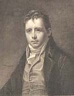
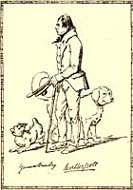
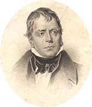

|
|
Home | Corson
Collection | Biography | Works | Image
Collection | Recent Publications | Portraits | Correspondence | Forthcoming
Events | E-Texts | Contact
|

|
|
Online Portraits of Sir Walter
Scott
|
|

|
Collections | Raeburn | Lawrence | Various
Collections
Back to top
Sir
Henry Raeburn (1808 and 1823)
Back to top
Sir Thomas Lawrence
(1820-26)
Back to top
Various
- Sir
William Allan: Scott Visiting Shakespeare's Tomb - Towards
the bottom of this page on Stratford-upon-Avon and Shakespeare,
there is a full-colour image of a painting depicting Scott's
visit to Shakespeare's tomb in Holy Trinity Church which
has been attributed to Sir William Allan (reproduced by kind
permission of The
Shakespeare Birthplace Trust).
- Homage
to Sir Walter Scott - Full-colour image of an art work
(acrylic, collage, ink, on canvas) created by Ann
Baldwin in 2002.
- Falconer
Museum, Forres, Moray - From The
Friends of the Falconer Museum site, this page on the exterior
of the Museum building includes an image of a carved head of
Scott. There is a link from the image to a biographical
page on Scott.
- John
Graham-Gilbert - From the James
Smith Noel Collection site, an engraving (by Thomas
A. Woolnoth?) after the 1829 portrait, extracted from The
National Portrait Gallery of Illustrious and Eminent Personages
of the Nineteenth Century (1830-1834).
- Daniel
Maclise - Maclise's 1825 sketch from Scots
Teaching and Research Network (STARN) at Glasgow University.
- William
Nicholson - From The
Engines of our Ingenuity website, an image of the 1817
etching by William
Nicholson.
- James
Saxon - Towards the bottom of this page from the University
of Calgary Library, there is a fore-edge painting of
Scott based on the 1805 portrait by James
Saxon.
- John
Steell - From George Easton House's Photography
Collections Online, a photograph by D.O. Hill and Robert
Adamson (taken ca. 1845) of Sir John Steell's sculpture of
Scott before it was placed in the Scott Monument.
Back to top

Back to Index
of Links
Last updated: 12 October-2009
© Edinburgh University Library
|
|

{kind=link}
{kind=link}
{kind=link}
{kind=link}
{kind=link}
{kind=link}